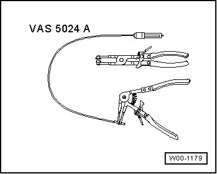
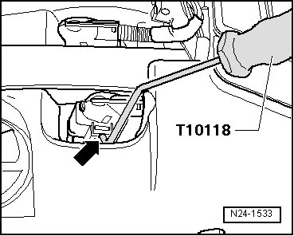
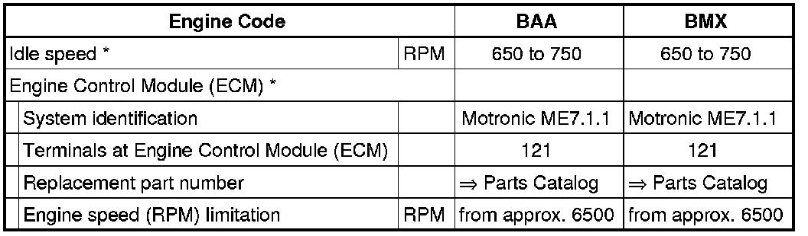

Fuel Injection System
Fuel Injection System
--> [ Oxygen Sensor Heater for Oxygen Sensors Before Catalytic Converter, Checking ] Oxygen Sensor Heater For Oxygen Sensors Before Catalytic Converter, Checking
--> [ Oxygen Sensor Heater for Oxygen Sensors After Catalytic Converter, Checking ] Oxygen Sensor Heater For Oxygen Sensors After Catalytic Converter, Checking
--> [ Mass Air Flow Sensor, Checking ] Mass Air Flow Sensor, Checking
--> [ Engine Coolant Temperature Sensor, Checking ] Engine Coolant Temperature Sensor, Checking
--> [ Intake Air Temperature Sensor, Checking ] Intake Air Temperature Sensor, Checking
--> [ Engine Speed Sensor, Checking ] Engine Speed Sensor, Checking
--> [ Coolant Fan Control Module 1, Checking ] Coolant Fan Control Module 1, Checking
--> [ Coolant Fan Control Module 2, Checking ] Coolant Fan Control Module 2, Checking
--> [ Coolant Pump, Checking ] Coolant Pump, Checking
--> [ Oxygen Sensors and Oxygen Sensor Regulation Before Catalytic Converter, Checking ] Oxygen Sensors and Oxygen Sensor Regulation Before Catalytic Converter, Checking
--> [ Oxygen Sensors and Oxygen Sensor Regulation After Catalytic Converter, Checking ] Oxygen Sensors and Oxygen Sensor Regulation After Catalytic Converter, Checking
--> [ Three Way Catalytic Converter, Checking ] Three Way Catalytic Converter, Checking
For all fuel injection system component locations.
For all fuel injection system removal/installation procedures and torque specifications. Refer to the service information.
Observe Safety Precautions and --> [ Safety Precautions ] Safety Precautions
Observe Clean Working Conditions --> [ Clean Working Conditions ] Clean Working Conditions
View Technical Data
• Engine Control Module (ECM) is equipped with On Board Diagnostic (OBD). Always check DTC memory first, before performing repairs or troubleshooting. Vacuum hoses and connections should also be checked (false air).
• For the electric components to work properly, a voltage of at least 11.5 V is required.
• Do not use any silicone sealant. Traces of silicone components which are sucked into the engine are not burned there, and they damage the oxygen sensors.
• The battery must only be disconnected and connected with the ignition switched off, since the Engine Control Module (ECM) can otherwise be damaged.
• Fuel hoses at engine must only be secured with spring-type clamps. The use of clamping collars or screw clamps is not permitted.
• Spring clip installation tool (VAS5024A) is recommended for installing spring-type clips.

• Vacuum hoses must not be clogged or kinked.
• Vacuum lines and hose connections must not have leaks.
• Engine Control Module (ECM) is equipped with On Board Diagnostic (OBD).
• Components marked with * are tested via On Board Diagnostic (OBD) , Diagnostic mode 3: Check DTC memory.
• It is possible that the control module will recognize a malfunction and store a DTC during some tests. Therefore the following work steps must be performed in the mentioned sequence after ending all tests and repairs.
After the repair work, the following work steps must be performed in the following sequence:
1. Check the DTC memory. Refer to --> [ Diagnostic Mode 03 - Read DTC Memory ] Reading Diagnostic Trouble Codes.
2. If necessary, erase the DTC memory. Refer to --> [ Diagnostic Mode 04 - Erase DTC Memory ] Clearing Diagnostic Trouble Codes.
3. If the DTC memory was erased, generate readiness code. Refer to --> [ Readiness Code ] Monitors, Trips, Drive Cycles and Readiness Codes.
Safety Precautions
CAUTION!
Observe the following for all installations, especially in engine compartment due to lack of room:
• Route lines of all types (e.g. for fuel, hydraulic, EVAP canister system, coolant and refrigerant, brake fluid, vacuum) and electrical wiring so that the original path is followed.
• Watch for sufficient clearance to all moving or hot components.
• Fuel system is under pressure! Before opening system, place rags around the connection point. Then release pressure by carefully loosening connection.
For safety reasons, fuses - 13 - and - 14 - (arrows) must be removed from the fuse holder before opening the fuel system since the Fuel Pumps (FP) can be activated via the door contact switch of the driver's door.

• Fuses nos. - 13 - and - 14 - are located in fuse holder of E-box, in plenum chamber, left.
CAUTION!
Fuel supply line is under pressure! Before opening fuel system, connect Diesel extractor and release pressure.
- Vent fuel system.
To reduce the risk of personal injury and/or damage to the fuel injection and ignition system, always observe the following:
• Do not touch or disconnect ignition wires when engine is running or turning at starting RPM.
• Only disconnect and reconnect wires for injection and ignition system, including test leads, when ignition is switched off.
If engine is to be cranked at starting RPM without starting:
- Disconnect connector from ignition coils 1 to 6.

Assembly tool (T10118) is recommended to release connector catches.
- To do so, attach assembly tool (T10118) on locking button (arrow) and then carefully pull down connector.
• Before disconnecting harness connectors, mark allocation to component.
If special testing equipment is required during road test, note the following:
• Test equipment must always be secured to the rear seat and operated from there by a second person.
If test and measuring equipment is operated from the passenger seat, the person seated there could be injured in the event of an accident involving deployment of the passenger-side airbag.
Technical Data

* not adjustable
* Replacing Engine Control Module (ECM).